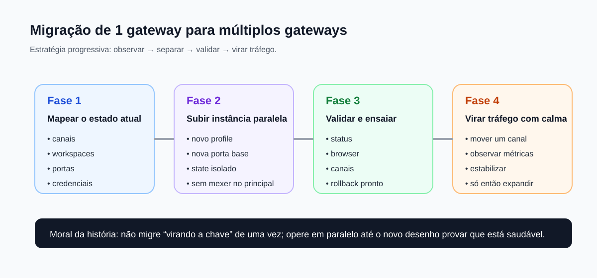

Migrar de um único gateway para múltiplos gateways não é um exercício de heroísmo. É um trabalho de observação, isolamento, ensaio e corte controlado de tráfego.
Como migrar de um gateway para múltiplos gateways sem quebrar operação
Depois que um OpenClaw começa a crescer, surge uma tentação comum: separar tudo rapidamente em múltiplas instâncias. O problema é que a migração "virando a chave" costuma ser o caminho mais curto para indisponibilidade, colisão de credenciais e confusão operacional. A estratégia certa é rodar em paralelo, validar e só depois mover tráfego aos poucos.
Diagrama — Fases da migração

Antes de tudo: confirme que múltiplos gateways são necessários
Se o problema for apenas separar personas, workspaces ou rotas de mensagem, multi-agent no mesmo gateway ainda costuma ser a solução melhor. Vá para múltiplos gateways quando você precisa de isolamento mais forte de processo, config, portas, auth ou risco.
Plano detalhado
Fase 1 — Mapear o estado atual
- Liste canais ativos e contas vinculadas.
- Mapeie o workspace atual e os workspaces derivados.
- Mapeie o state dir atual.
- Registre a porta base, portas derivadas de browser/CDP e qualquer override manual.
- Defina qual função a nova instância vai assumir: rescue, lab, work, segregação por risco, etc.
Fase 2 — Subir a nova instância em paralelo
- Crie um profile novo.
- Escolha uma porta base bem separada.
- Garanta state/config/workspace exclusivos.
- Suba a instância nova sem desmontar a antiga.
- Valide `status`, `browser status` e logs da nova sem tocar no principal.
Fase 3 — Ensaiar o comportamento
- Teste canais e ferramentas na nova instância.
- Verifique se browser/CDP não colidem.
- Confira se as credenciais certas estão no profile certo.
- Faça um plano de rollback simples e escrito.
Fase 4 — Virar tráfego aos poucos
- Migre um canal ou uma função de cada vez.
- Observe estabilidade, latência e ergonomia operacional.
- Não migre tudo enquanto o comportamento ainda estiver "estranho mas funcionando".
- Depois de estabilizar, continue a expansão.
Estratégia de rollback
Rollback bom não é drama. É preparação. Você precisa conseguir voltar um canal, uma rota ou uma operação para a instância anterior sem inventar enquanto a casa já está pegando fogo.
Anti-padrões de migração
- copiar config e só trocar a porta
- reaproveitar o mesmo state dir
- subir duas instâncias e só depois lembrar do browser/CDP
- migrar todos os canais de uma vez
- não documentar qual instância é responsável por quê
Validação mínima
openclaw --profile main status
openclaw --profile rescue status
openclaw --profile rescue browser status
openclaw doctor
openclaw healthEm uma migração saudável, a instância nova demonstra saúde operacional antes de receber tráfego relevante.